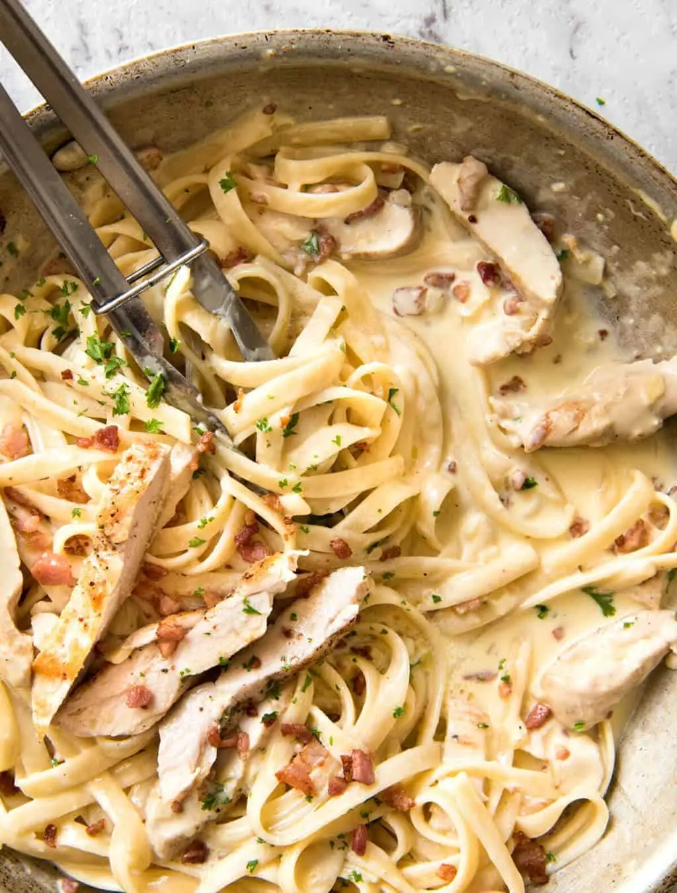

Pappardelle with Bacon Cream Sauce
- Total time30 mins
- Serves4
- Ingredients9
- Steps4

Ingredients
- Fresh Pasta Dough
- Semolina, plus more for dusting
- 1/2 cup chopped bacon
- 2 tablespoons unsalted butter
- 2 cups heavy cream
- 1 teaspoon freshly ground black pepper
- Kosher salt
- Extra-virgin olive oil, for tossing
- 1/4 cup grated Parmesan cheese
Directions
- Roll the pasta dough through a pasta machine, gradually making the dough thinner and thinner, until as thin as possible. Cut the dough into 3/4-inch-wide strips. Place the pasta strips on a semolina-floured baking sheet and cover with a kitchen towel until you are ready to cook the pasta.
- In a medium sauté pan, cook the bacon over medium-high heat, stirring, until lightly browned, 5 to 7 minutes. Transfer to a paper tower lined plate and let cool.
- In a small saucepan, melt the butter over medium heat. Whisk in 2 tablespoons of the semolina and cook, whisking, until smooth, 1 minute. Whisk in the cream and simmer until thickened, 4 to 5 minutes. Remove the pan from the heat and stir in the pepper and cooked bacon.
- Bring a large pot of salted water to a boil. Cook the pasta until al dente, 2 to 3 minutes. Drain and toss with olive oil. Toss the cooked pasta with the bacon cream sauce. To serve, divide the pappardelle among four plates and sprinkle some Parmesan over each.
Recipe credit: MasterChef Junior Cookbook by Christina Tosi